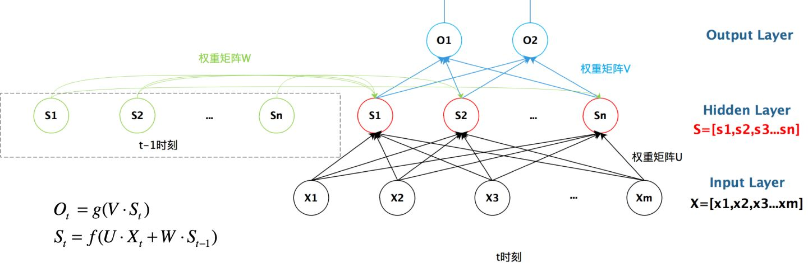

RNN
CNN
特点：参数共享
引入卷积核的原因在于全连接层所需的参数太多容易过拟合
卷积的作用
卷积核对应图片之中的感受野，卷积上的权重表现了图片不同位置的focus。
sobel算子：[[-1, 0, 1], [-2, 0, 2], [-1, 0, 1]] 可以检测水平梯度，也就是检测纵向边缘。而[[-1, -2, -1], [0, 0, 0], [1, 2, 1]] 可以检测纵向梯度，也就是横向边缘。
小卷积核 vs 大卷积核
多个小卷积核可以起到一个大卷积核的作用。比如2个3x3的卷积核和1个5x5的卷积核可以起到相同的作用。而2x9x9 < 5 * 5 因此采用多个小卷积核可以起到减少参数，防止过拟合的作用。
Dropout
每次输入都有一定概率删除部分神经元，以此防止过拟合。
Pooling
max pooling: 得到纹理信息
avg pooling: 得到背景信息
BN层
batch normalization
加速收敛
全连接层
将输出变成一维向量
存在问题：参数多容易过拟合
RNN
循环神经网络。为了让模型有记忆。

以上的图片展示了RNN的基本思路。
其中左半部分中的循环层一旦去掉，模型则退化成为了一个基本的神经网络模型。
循环层则是连接了前一轮和当前的隐藏层。
V – 输入层到隐藏层的权重
U – 隐藏层到输出层的权重
W – 前一轮隐藏层到当前隐藏层的权重
更具体来讲，RNN模型可以看做如下：

前一张图里的X，S，O均为向量。
后一张图中的每个单元则表示一个单独的值。
因此可见，隐藏层的当前状态有两个决定因素：当前的输入和前一个时间片的隐藏层的状态（记忆）。
LSTM
RNN 的示意图如下：

RNN理论上可以记忆先前从输入中获取的知识，但是由于记忆没有选择性，因此只能记忆比较短的内容。当面对长句子时候，RNN模型不能够很好的处理。
因此需要一种模型可以抓住关键信息。LSTM是RNN的一种变体，可以学习到long-term dependencies。
RNN单元内部具体操作，如下：

也就是在RNN部分的 中，f为tanh。
tanh为常见的激活函数，曲线和sigmoid有类似之处，但是相比sigmoid存在的梯度消失问题，tanh有所缓解。
RNN中的tanh主要是在模型中引入非线性。
相比起RNN，LSTM的内部模块更加复杂：

其中：

每一个时间点上的状态叫做cell state
LSTM的基本思想为：忘记该忘记的，记住该记住的
首先是如下这条线路：

这表示前一个cell state如果没有做任何的选择，也没有加入当前cell state的输入内容的话，就会直接传递给下一个cell state
因为我们需要先遗忘一部分不重要的东西，因此先通过遗忘门：

这里的 是一个介于0到1之间的向量，用于描述记下来多少信息。
先将 和 拼接成一个更大的向量，然后用 （权重矩阵）与它们相乘 — 空间映射，将原本的向量映射到与 相同，同时向量中的每一个元素都包含了 和 的全部信息。实际上该操作与 完全相同。
加上一个bias后，通过sigmoid层，将数值变到0到1的区间内，用于描述记住多少信息。
接下来我们需要对新的信息进行记忆，也就是记忆门：

为当前信息，我们需要挑选重要信息加入到 当中。tanh作用为激活函数。
的作用类似于之前的 只是， 用来挑选 中记忆多少， 用来挑选当前记忆中记忆多少。
与 相乘之后相当于重要的当前信息，然后加入到 当中。
这个时候获得的 就是当前的cell state 的完整信息。
下面则是控制输出：

用来选择哪些信息进行输出。
tanh 用来将结果压缩到 -1 到 1 之间。
输出。
VARIANTS ON LSTM
PEEPHOLE VERSION
这种版本的主要特点是gate的输出也参考了cell state的信息。orginal version gate的输出只利用了当前状态和隐藏层信息。

该示意图是所有的gate都融合了cell state的信息，但是许多论文只是部分gate融合cell state 信息。
这种版本让forget gate 和 input gate 融合，使用相同的矩阵参数。

也就是哪部分的信息被遗忘了，就用哪部分的的新信息来填补。
GRU(待补充)
这种版本让隐藏层和cell state融合了：

BILSTM
双向LSTM只是用了两个LSTM，一个的句子从前向后输入，另一个从后向前输入。这种方法一定程度上融合了前后的信息。
两个LSTM，对应cell的输出（隐藏层）相互拼接的到结果。
TRANSFORMER
Motivation:
- 当前Cell state的计算依赖于前一个Cell state计算的结果，因此训练难以并行。
- 虽然LSTM一定程度上缓解了长期依赖问题，但是特长期问题仍然存在
ENCODER
当我们想去实现一个机器翻译的工作时候。
Seq2Seq的基本模型如下：

其中的Encoder和Decoder都分别为一个RNN。
相比起 Seq2Seq 模型，Transformer的结构如下：（这个示例也是seq2seq形式的，在一些情况下，Transformer没有decoder这些部分）

由多个Encoder 和多个Decoder堆叠而成。之所以有这样的设计是因为我们希望翻译得到的每一个词都能有和它对应的原词。一个Encoder对应一个原本的word，一个decoder对应一个翻译的到word。
每一个Encoder对应内部结构如下：

Encoder的输入先经过一个Self-Attention层，再经过一个Feed Forward Neural Network.

需要注意的是单独的word做单独的Feed Forward Neural Network
SELF-ATTENTION
在这里的Self-Attention的作用在于让Encoder在Encode某个word的时候可以看到其他的word。
比如我们试图翻译如下句子：
”The animal didn't cross the street because it was too tired”
这里的it指代的是什么？相比起RNN的方式self-attention能让it和animal之间直接的联系起来。

Transformer使用的是Multihead Self-Attention，但是这里先从原始Self-Attention开始。
接下来介绍原始Self-Attention的细节
正如所有的Attention机制一样，Self-Attention需要3个变量，Query vector，Key vector，Value vector
首先，这3个变量都是由Embedding乘各自的一个matrix获得的。需要注意的是，这3种vector的长度都要比Embedding短。

其中 以此类推。
接下来，由于self-Attention 需要让每两个word之间都有连接。因此，假如句子为 “Thinking Machines” 则对于word - “Thinking” ,它的query 需要和 以及 进行点积。
由于我们想要获得的是weight，因此对[, ]进行softmax操作，得到[, ]。显然 会更大，通过这种方式大部分的weight仍然在本个单词上，但会有少量的weight分布在其他的word上。
对values进行weighted sum，得到的 为Thinking的Self-Attention的输出。
Multi-headed Self-Attention
多头自注意力机制相比于self-attention有多组用来得到Query，Key，Value的matrix。
比如有8个head，则有8套matrix。对于词 Thinking 得到8个self-attention输出的matrix。
为了整合信息，将8个matrix进行拼接，并乘以一个wighted matrix , 得到Multi-headed Self-Attention 的结果。
流程如下：


RESIDUALS
由于word的位置有时也会影响对句子的理解，因此word的embedding需要加入位置信息，这种位置信息可以直接反应两个word之间的distance，将原有embedding与postion embedding（由定义的三角函数获得，并非训练得到）相加得到最终embedding。
需要注意的是，计算的key，value，query，使用的是加入了position embedding的。
另外每一层self-attention, 每一层的Feed Forward Neural Network后都加了一层normalization layer。
做法是将对应normalization层前一层的输入和输出相加后进行normalization。如下图所示：

DECODER
完整的Transformer结构如下（此为Encoder和Decoder都是2个的情况）：

Self Regression
之前的模型可以有多种应用。如果应用到文本的生成，一般采用自回归的方法。
也就是：
- 训练时，每一个cell输入是ground truth中的前一个词。cell的输出和ground truth计算损失，做更新。
- 生成时，每一个cell的输入是前一个生成的词。持续生成直到生成终止符号。